classroom home · jadexzhao · builder / sunrise · @zhao.langxi
Jade Zhao · Indiana University Luddy · Class of 2027 · giving back
here’s what you need to know as an Informatics major, Class of 2027, at Indiana University
From Jade Zhao at IU’s Luddy School. For high school seniors and early starters (including kids still in AP Computer Science Principles). I took AP CSP as a freshman. Never too early. I love IU, and this is me passing notes forward.
Quick version: official links, AP credit, and first-year tips for Informatics at IU. Verify everything on live university pages. Miss Zhao (that’s my teaching name) is on hiatus for senior year. This page is giving back while I finish school. Engineering is for everyone. My high school Asian American robotics teacher taught me that.


Official Luddy & IU links · current
These are live university pages. Prefer them over any student tip sheet (including mine) when you plan courses, cognates (your secondary focus area), or credit.
- Bachelor of Science in Informatics · Academic Bulletin (current)
- Luddy Degree and Major Requirements · Academic Bulletin (current)
- Informatics courses · Academic Bulletin (current)
- Web Design and Development Cognate · Academic Bulletin (current)
- Advanced Placement Exam Credit · Freshman applicants · IU Admissions (current)
- First Year Experience (FYE) · Student Life (current). Orientation hub on one.iu.edu.
- Orientation to-do checklist · IU First Year Experience / Orientation portal (login). Official IU tasks, not a personal Doc.
- Jade's Checklist · packing · first-party on this site · Archival · Year '23 (2023)
- Find resources: Student Mental Health · iu.edu (current)
- IU Bloomington official academic calendar · Registrar · FA26 to FA27 (Fall 2026 to Fall 2027) source of truth
Archival · Year '22 / '23 bulletin snapshots (not for current planning): BS Informatics 2022 to 2023 · Luddy requirements 2022 to 2023. Your degree rules follow the bulletin year you entered IU. Ask advising. Prefer the Registrar + current bulletin above.
Never too early · AP & AP Computer Science Principles
I sat AP Computer Science Principles (AP CSP) as a high school freshman. If you are curious about code and systems now, start now. You do not need to wait until senior year of high school. Build tiny projects you can explain in plain language. That habit beats hoarding certificates.
Official AP exam credit at IU Bloomington (always verify current table): bloomington.iu.edu · AP exam credit.
- Computer Science Principles (AP CSP / “Computer Science P”) · score 3, 4, or 5 →
CSCI-C 102(3 cr) - Computer Science A · score 3 →
CSCI-C 102(3 cr); score 4 or 5 →CSCI-C 200(4 cr)
Send official scores from the testing agency to IU Admissions. Your counselor can help map credit to your intended major. Credit tables can change, so read the live page.
Orientation & First Year Experience (FYE)
Show up prepared. Know where advising lives. Bring questions about first-semester load, AP credit, and how Informatics sequences with GenEd (general education requirements). Orientation is not a tour for Instagram. It is where you lock a schedule you can survive.
Bloomington orientation hub: one.iu.edu · Orientation Bloomington. First Year Experience: studentlife.indiana.edu · FYE. Orientation task list (login): FYE to-do checklist.

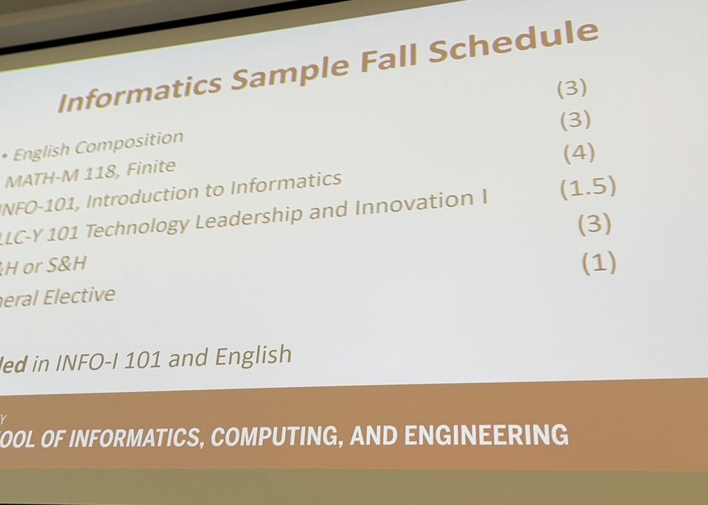
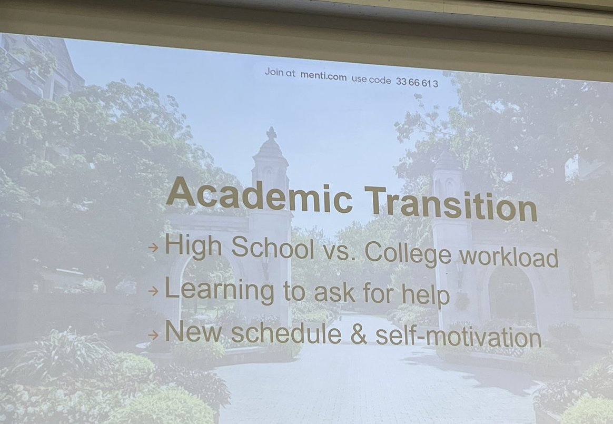
Mental health resources
College is a lot. IU publishes official student mental health resources. Use them. I am linking out only. I am not giving medical or counseling advice.
Informatics courses · Class of 2027 notes
Notes from someone still in it, not a copy of the Reddit thread. That post (thanks again, Let's break down the classes in Informatics) showed me what passing notes forward looks like for Luddy students.
- Core path · Expect a ladder through intro, math foundations, social informatics, infrastructure (Python), human-computer interaction (HCI), and information representation. Prerequisites matter. Ask advising before you skip around.
- Office hours · Go early on group project courses. Do not be the teammate who disappears. Professors remember curiosity more than panic emails at midnight.
- Design vs. code · Some courses feel creative and project-heavy. Some feel like systems and databases. Both count. Follow what you can sustain for a whole semester.
- Cognate / minor · Informatics pairs tech with another field. Pick something you will actually use. Business, media, security tracks, and more exist. Confirm current options in the bulletin.
- Capstone & topics · Save bandwidth for later. Topic courses and capstone vary a lot by semester. Leave yourself room to do good work, not just check boxes.
For official requirements, use the Luddy bulletin and your advisor, not a blog post (including this one). Community threads age. Policies update.

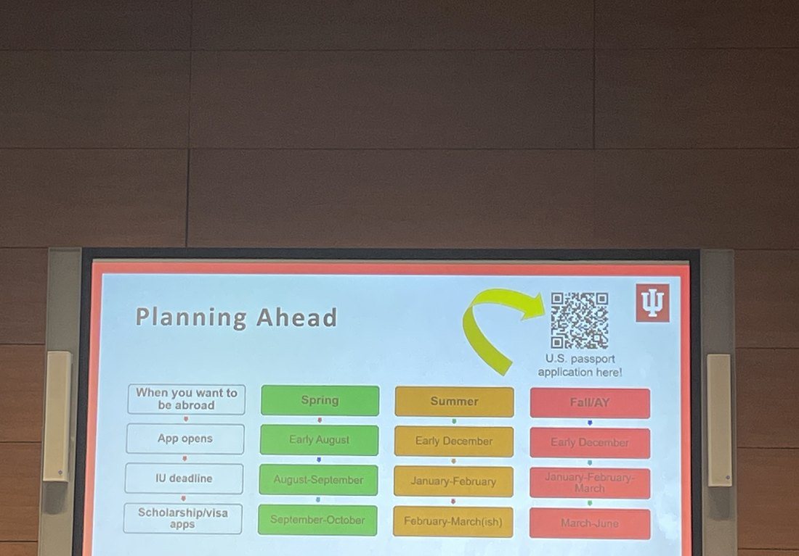

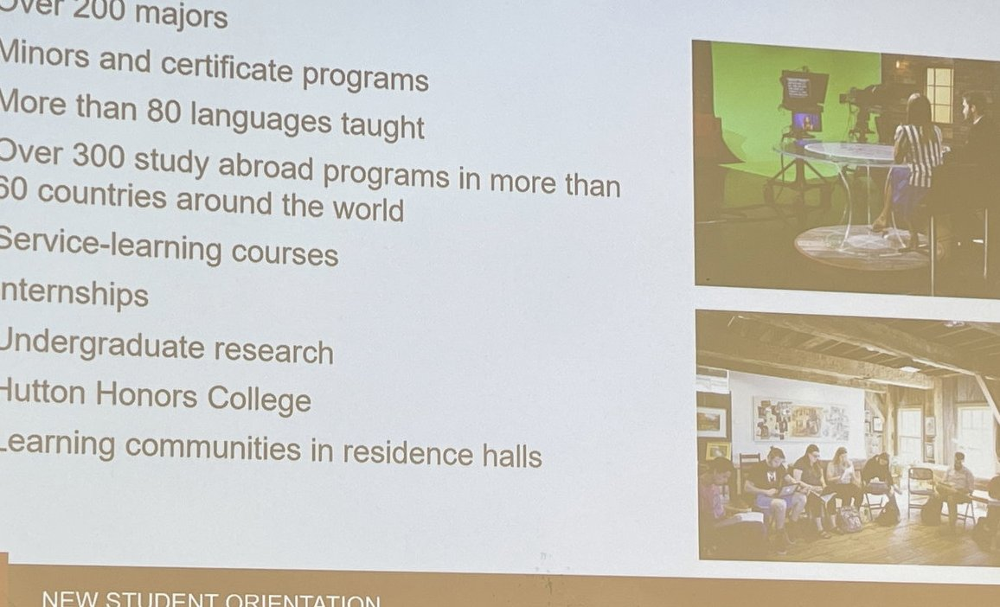
How to get involved
- Talk to Luddy advising early about first-year load and AP placement.
- Join a student org or peer mentoring space once you land. Showing up beats lurking forever.
- Build something small you can explain in plain language.
- When you have notes that helped you, pass them on. That is the whole point of this page.
Campus survival · Year '23 archive
Archival · Year '23 (2023)
Student-life notes live first-party here. Visitors, dorms, packing checklist, welcome week, bucket list, outfits, coffee, and Q&A. Archival · Year '23 (2023) · not FA26 to FA27 tip sheets. Verify hall rules and dates on official IU pages. School Instagram: @zhao.langxi.
- Campus survival · Year '23 · full archive with dated banner.
- Packing · Welcome Week · dorms · coffee · bucket list · Q&A
- IU Bloomington official academic calendar · Registrar · current FA26 to FA27 source of truth for deadlines.

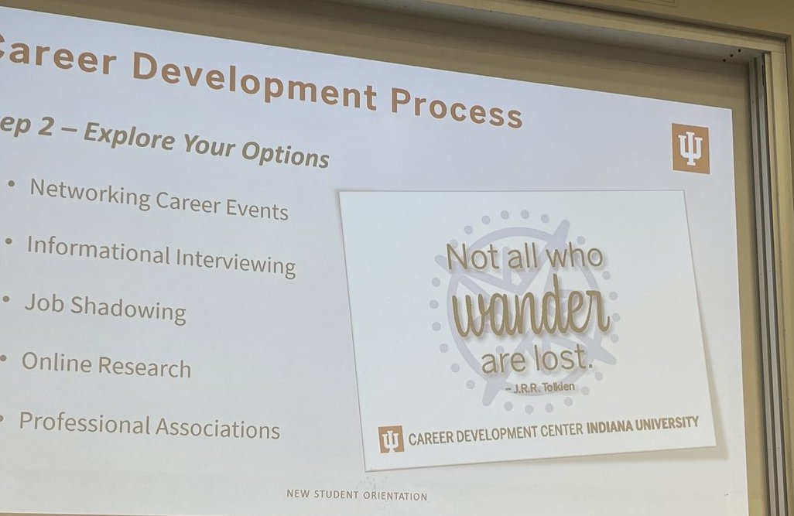
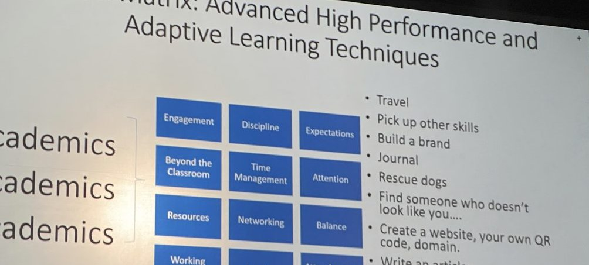
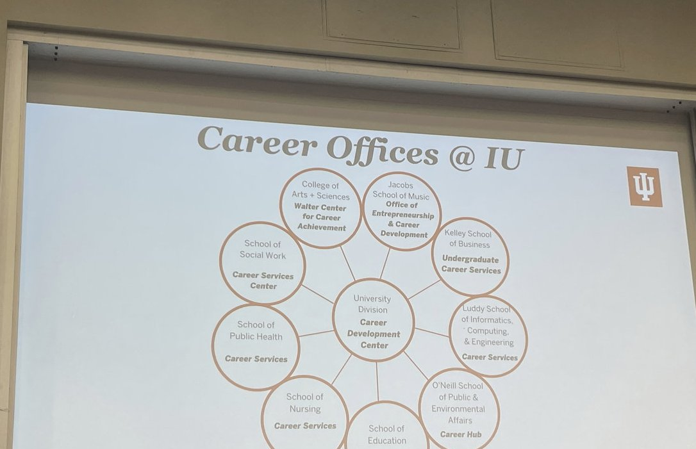

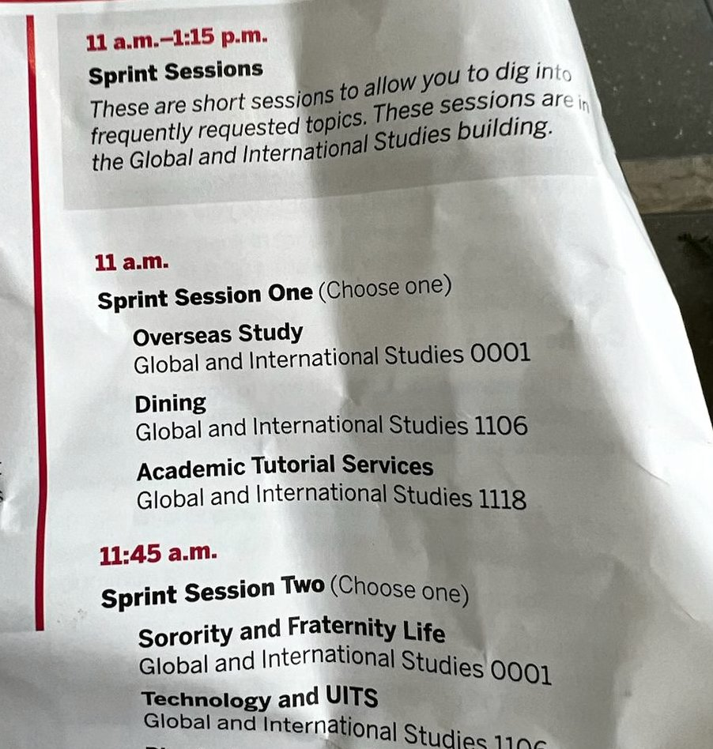
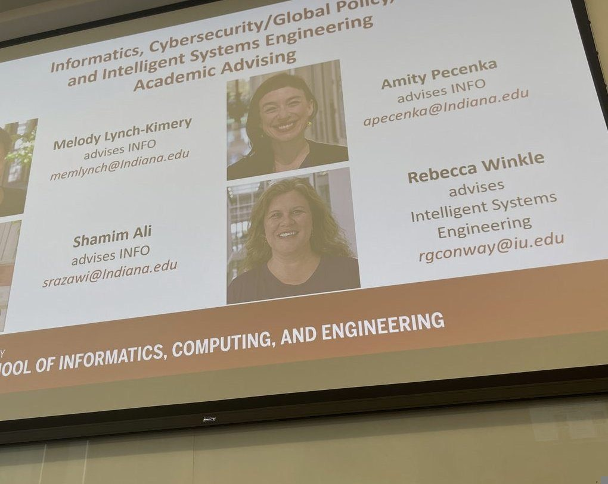
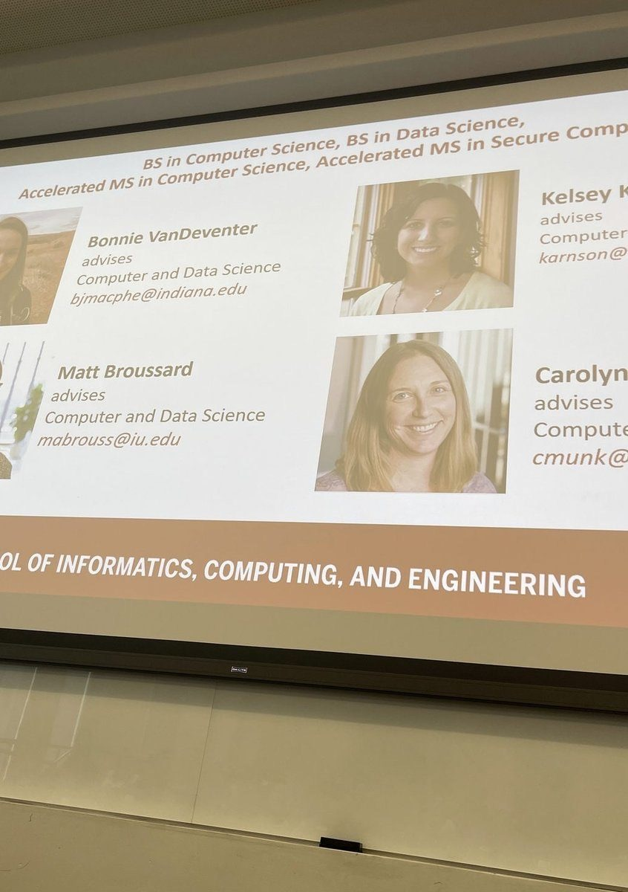
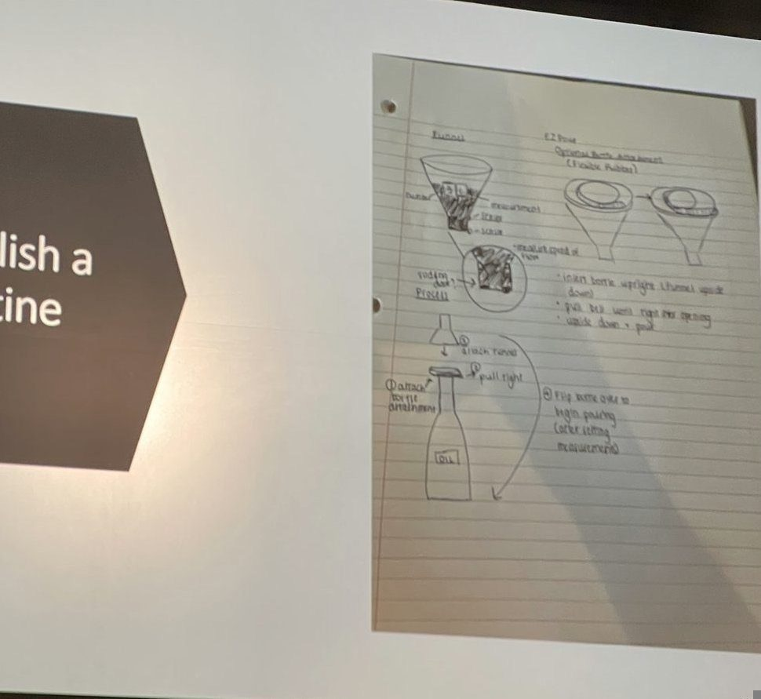
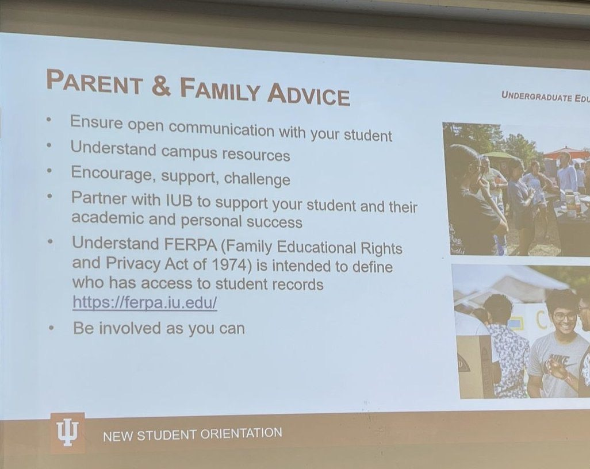